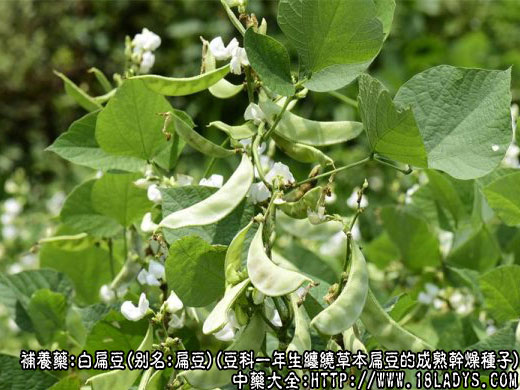
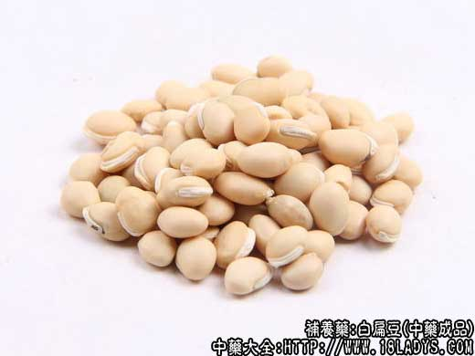
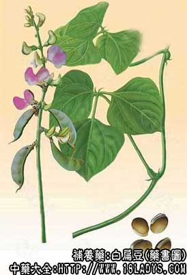

别名；扁豆
来源：为豆科一年生缠绕草本植物扁豆的成熟干燥种子。
性状鉴别：本品呈椭圆形或扁卵圆形，长0.8～1.5厘米，宽0.6～1厘米，厚0.6～0.8厘米。表面黄白色、平滑，略有光泽，偶有黑色斑点。边缘具眉状隆起的白色种阜一条，约占周径的1/3～1/2。种皮薄，略革质样。除去种皮，内有黄白色肥厚的子叶两片，角质，坚硬。气无，味淡，嚼之有豆腥味。
主要成分：富含淀粉，并含甲、乙、丙种维生素和烟酸。
药理作用：消暑化湿、和中健脾，利尿。
功能：补脾胃，化暑湿，解毒。
主治：脾胃虚弱，呕吐，泄泻，解河豚毒，酒毒。
临床应用：1、用于解暑，治夏天胃肠型感冒、急性胃肠炎、消化不良，证见暑热头痛、恶寒烦躁、口渴欲饮、心腹疼痛、吐泻、饮食不节等暑湿症状，一般用生扁豆，配芳香化湿药等，方如香薷饮。
2、用于健脾，治慢性腹泻，炒用较好。
用量：6～18g。
【处方举例】
香薷饮（《局方》）：香薷4.5g，厚朴6g，炒扁豆18g，水煎服。